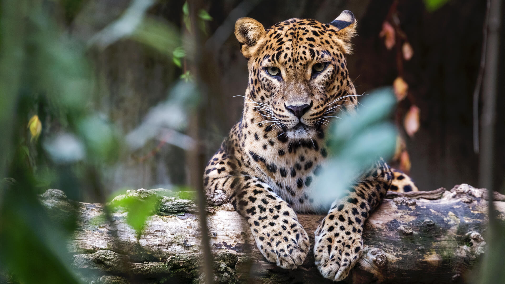
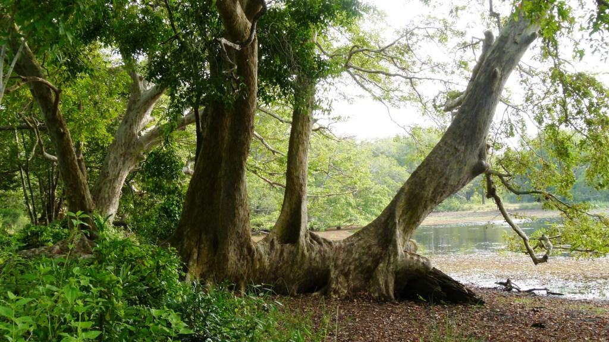

Hotline Number :- 18890 Languages
Types of Wildlife Attractions Beaches Heritage Locations Activities Purchase and Donate Contacts


Hotline Number :- 18890 Languages
Types of Wildlife Attractions Beaches Heritage Locations Activities Purchase and Donate Contacts


| Venue Name | Map | Image | Venue Description |
|---|---|---|---|
| Yala National Park |  |
This park ranked as the wildlife preserves in Sri Lanka and it's one of the popular travel destinations in the world as well. "Elusive Lepoard" is the center of attention in this sanctuary. | |
| Wilpattu National Park |  |
This park spreads over 131,693 hectares.There are 50 wetlands in this reserve and they are labelled as "Villus".A Villu can be defined as shallow natural lake toped off with fresh rainwater and covered by open grassy plains. | |
| Udawalawe National Park |  |
This wildlife preserve is positioned on the boundary of Sabaragamuwa and Uva Provinces of Sri Lanka.This park provides a shelter for the exiled animals as result of the Udawalwe Resorvior construction. | Contents of this table are updated on a regular basis. |
| Animal / Plant Name | Habitat | Image | Food |
|---|---|---|---|
| Ceylon Stainwood | Yala National Park |  |
Sunlight, water and natural decendants |
| Sir Lankan Leopard | Yala National Park |  |
Raw meat |
| Kumbuk | Wilpattu National Park |  |
Sunlight, water and natural decendants |
| Sri Lankan Keelback | Wilpattu National Park |  |
Raw meat |
| Hopea Cordifolia | Udawalawe National Park |  |
Sunlight, water and natural decendants |
| Ceylon Suprfowl | Udawalawe National Park |  |
Insects, worms and plants | Contents of this table are updated on a regular basis. |